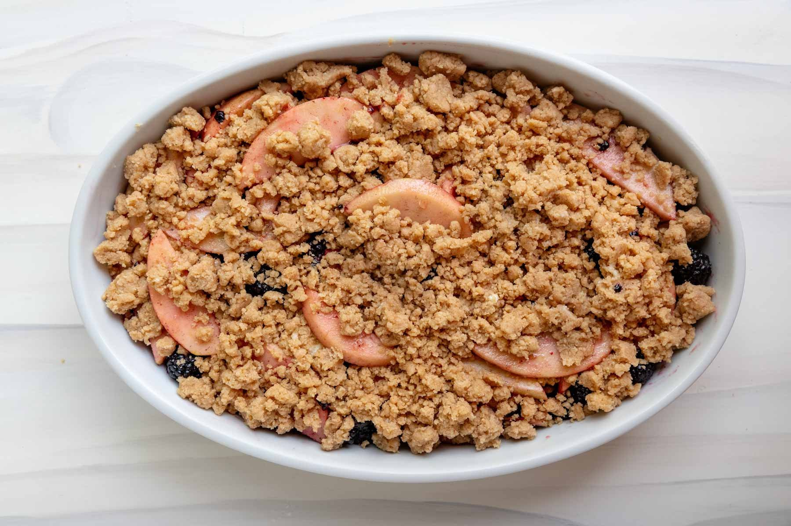

Apple Crisp Recipe

Description
This apple crisp showcases apples at their best!
The combination of warm, tender apples
and the crunchy oat topping is one of my favorite desserts.
Delicious with a scoop of vanilla ice cream.
Yields 12 servings
Ingredients
- 10 cups all-purpose apples, peeled, cored and sliced
- 1 cup white sugar
- 1 tablespoon all-purpose flour
- 1 teaspoon ground cinnamon
- 3 tablespoons water
- 1 cup quick-cooking oats
- 1 cup all-purpose flour
- 1 cup packed brown sugar
- ¼ teaspoon baking powder
- ¼ teaspoon baking soda
- ½ cup butter, melted
Steps
- Gather all ingredients. Preheat the oven to 350 degrees F (175 degrees C).
- Place sliced apples in a 9x13-inch baking dish. Mix white sugar, 1 tablespoon flour, and cinnamon together; sprinkle over apples. Pour water evenly over apples.
- Combine oats, 1 cup flour, brown sugar, baking powder, and baking soda in a large bowl. Add melted butter and mix with a fork until crumbly; sprinkle evenly over apple mixture.
- Bake in the preheated oven until apple filling is bubbling, and top is golden brown, crisp, and caramelized around the edges, about 45 minutes.
- Enjoy!
Home